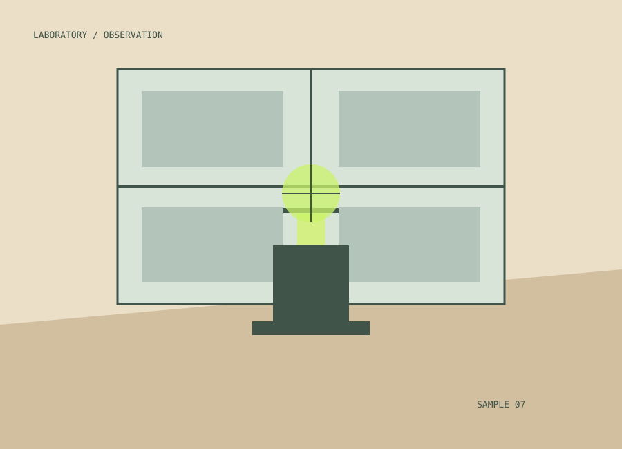

Из чего состоит пустота: удивительный мир квантового вакуума
Даже там, где нет привычной материи, физика обнаруживает движение и энергию. Разбираемся, что учёные называют вакуумом.
Написать редакции ↗РАЗДЕЛ 01 / ИССЛЕДОВАНИЯ
Мир полон закономерностей, которые ещё предстоит обнаружить. Здесь мы говорим об исследованиях, экспериментах и людях, двигающих знания вперёд.
OBSERVATION / 001ПОДБОРКА РЕДАКЦИИ
Даже там, где нет привычной материи, физика обнаруживает движение и энергию. Разбираемся, что учёные называют вакуумом.
Написать редакции ↗
Внутри каждой клетки работают сложные механизмы обмена, доставки и переработки веществ.
Написать редакции ↗
От сверхпрочных сплавов до материалов, способных менять свои характеристики под воздействием среды.
Написать редакции ↗Самое прекрасное, что мы можем испытать, — это ощущение тайны.